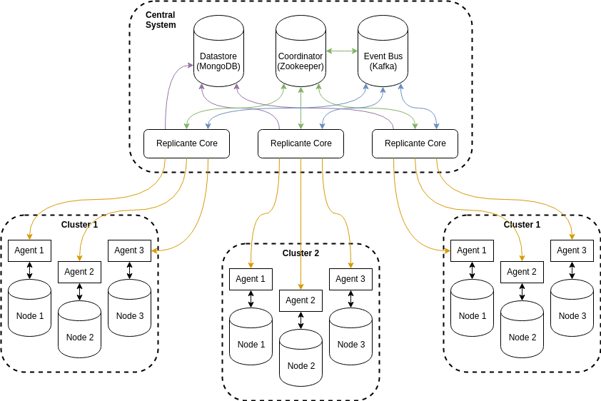

Architecture overview
Replicante uses a central system that interacts with nodes though agents.

Agents
An agent process is deployed along-side each datastore process. Agents are intermediaries between the central system and the datastore nodes themselves. They perform the following tasks:
- Interface adaption between Replicante's datastore model and the software itself.
- Monitoring of the datastore process.
- Performing actions as instructed by the central system.
Central system
The central system (replicante core) interacts with all the agents. The main purpose is to aggregate agents state to emit events and to react to these events.
The rest of this documentation is dedicated to explaining all the ins and outs of Replicante core.